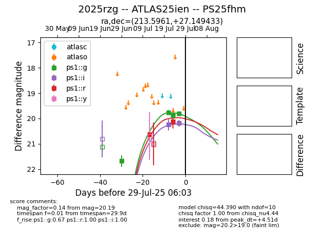

Target 2025rzg at 2025-07-29 06:03, see:
TNS: wis-tns.org/object/2025rzg
YSE: ziggy.ucolick.org/yse/transient_detail/2025rzg
alt names
2025rzg (yse,tns)
ATLAS25ien (atlas)
PS25fhm (panstarrs)
coordinates:
equatorial (ra, dec) = (213.5961,+27.14943)
galactic (l, b) = (37.7677,+71.56760)
photometry
last ps1::g=19.81, ps1::i=20.19, ps1::r=20.13
4 ps1::g, 2 ps1::i, 2 ps1::r detections
